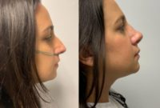

Name: Wilson DuMornay, MD, FACS
Last name: DuMornay
Gender: male
Began aesthetic medicine in: 2004
Years experience: 19
Primary Specialty: Otolaryngologist
Business: Broward ENT & Aesthetics
Address: 3536 N. Federal Hwy.
Address suite: Ste. 102
Phone: +1 954-533-9822
City: Fort Lauderdale
State: Florida
Zip Code: 33308
Country: US
Statement: Dr. Wilson DuMornay brings nearly 20 years of professional excellence in the field of Medicine. He is currently the founder of Broward ENT & Aesthetics, a private medical practice in Fort Lauderdale specializing in curing sleep apnea, as well as aesthetic plastic surgery. Expert procedures undertaken by him include endoscopic sinus surgery, balloon sinuplasty, septoplasty, rhinoplasty, tracheal and laryngeal surgery, thyroid lobectomy, biopsies, as well as plastic and reconstructive surgery.
Dedicated to providing the highest standard of comprehensive care, Dr. DuMornay is on staff at Broward Health Medical Center in Fort Lauderdale & Broward Health North in Deerfield Beach. He is also affiliated with South Florida Surgical Specialists, LLC.
Dr. DuMornay earned his Bachelor of Sciences in Biochemistry from Dartmouth University and his Medical Degree from Temple University’s Louis Katz Medical School. Dr. Wilson then went on to complete his residencies in otolaryngology – head and neck surgery at Memorial Sloan-Kettering Cancer Center and the Albert Einstein College of Medicine. Shortly after, he was invited for a Fellowship in Head and Neck Oncology with Microvascular Reconstruction at the University of Miami School of Medicine. With a commitment to excellence, Dr. DuMornay is board-certified in otolaryngology by the American Board of Otolaryngology-Head and Neck Surgery.
Following his fellowship, Dr. DuMornay provided care to soldiers injured in combat, as well as Iraqi patients from surrounding villages. Subsequently, he was deployed two more times before exiting the military with the rank of Lieutenant Colonel. He is currently retired from the US Army Reserve as Colonel of the Medical Group.
Active in his field, Dr. DuMornay is a Fellow of the American Academy of Otolaryngology and Fellow American College of Surgeons. He stays on top of the latest advancements in Medicine by maintaining active memberships with the American Medical Association, the Broward Medical Association, and the American Academy of Cosmetic Surgery.
Consulting Fees: 0$
Has Sponsored Offer : No
Special Offers:
Offer #1: Galderma Offer
Special Offer Treatments: All treatments
End Time: 12/31/2023
Detail: Sign up for Aspire Galderma Rewards prior to your appointment to receive $20 off on each treatment listed below: Dysport®, Restylane® family, Sculptra® Aesthetic.
Clinical Privileges:
- Broward Health Medical Center , Broward Health North
Education:
- Medical: MD, Temple University School of Medicine, Philadelphia, Pennsylvania, 1998
Postdoc Training:
- Internship: General Surgery, Tulane Medical Center, New Orleans, Louisiana, 1999
- Residencies:
- Otolaryngology-Head and Neck Surgery, Albert Einstein University/Montefiore Medical Center, New York, New York
- Otolaryngology-Head and Neck Surgery, Memorial Sloan Kettering Cancer Center, New York, New York
- Fellowship: Head and Neck Oncology with Microvascular Reconstruction, University of Miami, Coral Gables, Florida
GPS coordinates on map: 26.1709454,-80.1188242
Primary location:
Location name: Fort Lauderdale
State: FL
Country: US
Map point: 26.1882,-80.1710968
Wilson DuMornay, MD, FACS
Treatments:
- African American Rhinoplasty
- Asclera
- Belotero
- Botox
- Botox for Gummy Smile
- Botox for Hyperhidrosis
- Botox for Migraines
- Botox for TMJ
- Botox for Vaginismus
- Brow Lift
- Buccal Fat Removal
- Carboxytherapy
- Cheek Augmentation
- Cheek Lift
- Chemical Peel
- Chin Filler
- Chin Implant
- Chin Liposuction
- Collagen Injection
- Cyst Removal
- Deep Plane Facelift
- Dermabrasion
- Dermal Fillers
- Dermapen
- Dermaplaning
- Double Eyelid Surgery
- Dysport
- Ear Surgery
- Earlobe Repair
- Eyelid Surgery
- Facelift
- Genioplasty
- Kybella
- Lipoma Removal
- Liposculpture
- Liquid Facelift
- Mole Removal
- Nonsurgical Butt Lift
- Nonsurgical Facelift
- Nonsurgical Neck Lift
- Nonsurgical Nose Job
- O-Shot
- P-Shot
- PRP for Hair Loss
- PRP Injections
- Radiesse
- Renuvion
- Restylane
- Restylane Defyne
- Restylane Lyft
- Restylane Refyne
- Restylane Silk
- Revision Rhinoplasty
- Rhinoplasty
- Sculptra
- Septoplasty
- Sinus Surgery
- Skin Tightening
- Smart Lipo
- TempSure Envi
- Thread Lift
- Vampire Facelift
- Vaser Liposuction
- Xeomin
RealSelf Info
Awards:
- Top Doctor, Plastic Surgery, 2020
- Continental Who’s Who for a Lifetime Achievement Award in the field of Medicine as the Owner, Plastic Surgeon & Otolaryngologist at Broward ENT & Aesthetics
Rating: 5.0
Profile views: 2554
Answer count: 5
Review count: 3
Star rating: 2.0473720558371
Offer count: 1
Profile created: May 24, 2019
Profile modified: Dec 4, 2021
Profile promotion: No
Profile inactive: No
Premier status: Free
Tier: Free-Unclaimed
RealCare Promise: No
Directory link: Otolaryngologist
RealSelf’s PRO: No
Doctor Designation Start Time: Dec 30, 2020
Doctor Designation End Time: Jan 1, 2033
Locations
- Fort Lauderdale, FL, US. GPS coordinates: 26.1882,-80.1710968
Latest ratings of treatments
- Liposuction (Sep 2023) – Overall rating: 5/5
- Botox (Sep 2023) – Overall rating: 5/5
- Liposuction (Sep 2023) – Overall rating: 5/5
- Botox (Feb 2021) – Overall rating: 5/5
- Botox (Feb 2021) – Overall rating: 5/5
- Botox (Feb 2021) – Overall rating: 5/5
- Botox (Feb 2021) – Overall rating: 5/5
- Liposuction (Jan 2021) – Overall rating: 5/5
- Liposuction (Jan 2021) – Overall rating: 5/5
- Liposuction (Jan 2021) – Overall rating: 5/5
- Liposuction (Jan 2021) – Overall rating: 5/5
- Liposuction (Jan 2021) – Overall rating: 5/5
- Liposuction (Jan 2021) – Overall rating: 5/5
- Liposuction (Jan 2021) – Overall rating: 5/5
Practice Locations
Name & Website
Broward ENT & Aesthetics, https://www.browardentaesthetics.com/
Address
3536 N. Federal Hwy.Ste. 102, Fort Lauderdale, Florida, US, 33308 (GPS coordinates: 26.1709667,-80.1187695)
Working Hours
Mon: 9:00am – 5:00pm
Tue: 9:00am – 5:00pm
Wed: 9:00am – 5:00pm
Thu: 9:00am – 5:00pm
Fri: 9:00am – 5:00pm
Sat: 9:00am – 3:00pm
Created / Modified
May 24, 2019 / Dec 3, 2021
Special Offers
Heading
Start Time / End Time
Detail
Treatments
Galderma Offer
Dec 3, 2019 /
Dec 31, 2023
Sign up for Aspire Galderma Rewards prior to your appointment to receive $20 off on each treatment listed below: Dysport®, Restylane® family, Sculptra® Aesthetic.
Specific treatments
Doctor's answers
Question
Answer Header & Date
Answer Snippet
Follow-up: Photos added, do I have enough fat on my abdomen to fill my hip dips?
Fat grafting/ liposuction
Dec 30, 2020
Thank you for your question!You are certainly at a good BMI (21) and seem to have a good amount of fat that can be grafted from the abdomen and back (lipo 360). An in person consultation as well as looking at the deficit of the hips and your desired outcomes is however necessary to provide further guidance. Also keep in mind that if the patient seems to not have enough fat to fill the desired areas ( with a reabsorption rate of about 40%) , harvesting from other areas such as arms may be...
Chin lipo or Kybella?
Kybella Vs Chin Lipo
Dec 30, 2020
Thank you for your question,We typically performed both procedures in our office and this is actually one of the most common questions patients have! Kybella: Minimally invasive with minimal downtime, however, patient do have significant swelling, redness and tenderness x1 week. No incisions are necessary, just series of injections. Multiple sessions and multiple vials may be needed to achieve a desired results (may need 6 treatments 1 month apart), which can end up being very costly. Chin...
Am I candidate for chin liposuction or would a neck lift be more appropriate?
Neck Liposuction Vs Neck lift
Dec 30, 2020
Thank you for these great images! Skin quality and the desired patient outcome are important factors in deciding what procedure would be most beneficial for you. Chin liposuction would target excess fat and is typically recommended for individuals 50 years of age and less who have more elastic skin. A neck lift is typically recommended for older patients who may have sagging and decreased elasticity to the skin. This ladder, does not seem to be your particular case. Chin liposuction seems to...
Can I have my deviated septum corrected and partially covered by insurance?
Combination Rhinoplasty/ Septoplasty
Dec 30, 2020
This is a great question! It will be important to perform a CT scan face/sinuses in order to evaluate how badly deviated the septum is , previous nasal fractures, and any sinus inflammatory changes. A rhinoplasty (cosmetic enhancement of the nose) can in many settings be performed simultaneously when performing a septoplasty and in some settings may be covered by insurance! A consultation with a ENT/Plastic/ Reconstructive surgeon would be useful to identify whether you are a candidate for...
if I have fatty tissue or a benign tumor in jowl area can Kybella be injected and will it shr
Neurofibroma
Dec 30, 2020
A plexiform neurofibroma involves more than just fatty tissue as being a variant of peripheral nerve tumor. Since it is not just fatty tissue, Kybella or a bile acid that is used to emulsify fat for absorption will not be indicated. Location, surrounding structures, as well as size of the lesion are an important factors when deciding treatment approach / excision. Seeing a Neurosurgeon/ Neuro-oncologist that specializes in this type of lesions would be helpful! Hope this helps!
Latest Before And After Photos
-
-
Dr. DuMornay, Fort Lauderdale, Florida (33308) 41 Year Old Mother Treated With Under Eye Tightening Surgery
-
-
Doctor DuMornay, Fort Lauderdale, Florida 45 Year Old Miss Treated With Liquid Face Lift Treatment
-

-
39 Year Old Ms. Treated With Nose Surgery Patient With Dr Wilson DuMornay, MD, FACS, Fort Lauderdale, Florida (33308)
Last updated on 12/06/2023